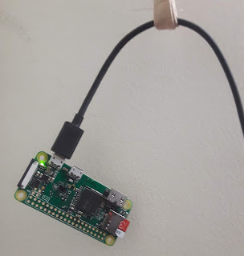

Gã nhẹ nhàng mở nắp chiếc hộp nhựa, nó đã theo gã đi về tương lai 2 múi giờ suốt 1 năm trời rồi lại quay trở về, vẫn chỉ nằm im trong đó.
Lớp kim loại sáng bóng khi xưa nay đã lốm đốm đen như làn da của những bạn trẻ U40.
Rút chiếc thẻ nhớ, cắm vào khe đọc. Bật nautilus, kết nối thành công. Sửa password wifi trong /etc/wpa_supplicant/wpa_supplicant.conf rồi cắm trở lại.
Một đầu kết nối cổng USB-A, đầu kia cắm vào cổng micro USB power, đèn xanh nháy liên tục rồi sáng hẳn, nó còn sống.
Nó là chiếc Raspberry Pi Zero W(ireless) mua từ 2018.
Upgrade từ Buster lên Bookworm không thành
Chiếc Raspberry Pi vẫn chạy "ngon", vì "ngon" là do người ăn đánh giá. Nhưng phần mềm lẫn hệ điều hành đều đã cũ, bản Raspbian Buster hết hạn vào tháng 6 năm 2024.
Hệ điều hành mặc định cho Raspberry Pi từng có tên là Raspbian, phát triển dựa trên Debian.
Năm 2020, hệ điều hành chính thức của Raspberry Pi có tên là Raspberry Pi OS hay gọi tắt là raspios.
Tiếp tục dựa trên Debian, raspios trải qua bản Bullseye phát hành năm 2021, rồi tới Bookworm vào năm 2023.
Việc upgrade không được hỗ trợ hay khuyên dùng bởi nhà sản xuất, nên cố làm chỉ dẫn đến thương đau. Nhưng nhỡ đâu bạn lại thích đau, thì sau khi thay đổi chữ buster thành bullseye trong /etc/apt/source.list, gõ apt upgrade, kết quả:
# apt --fix-broken install
Reading package lists... Done
Building dependency tree
Reading state information... Done
Correcting dependencies... failed.
The following packages have unmet dependencies:
bsdmainutils : Depends: ncal but it is not installed
libc-bin : Depends: libc6 (< 2.29) but 2.31-13+rpi1+deb11u13 is installed
libc-dev-bin : Depends: libc6 (< 2.29) but 2.31-13+rpi1+deb11u13 is installed
libc6-dbg : Depends: libc6 (= 2.28-10+rpt2+rpi1+deb10u2) but 2.31-13+rpi1+deb11u13 is installed
libc6-dev : Depends: libc6 (= 2.28-10+rpt2+rpi1+deb10u2) but 2.31-13+rpi1+deb11u13 is installed
locales : Depends: libc-bin (> 2.31) but 2.28-10+rpt2+rpi1+deb10u2 is installed
mailutils : Depends: mailutils-common (= 1:3.10-3) but 1:3.5-4 is installed
Depends: libmailutils7 but it is not installed
Recommends: default-mta or
mail-transport-agent
openssh-sftp-server : Depends: openssh-client (= 1:7.9p1-10+deb10u4) but 1:8.4p1-5+deb11u5 is installed
E: Error, pkgProblemResolver::Resolve generated breaks, this may be caused by held packages.
E: Unable to correct dependencies
Cách được khuyên dùng, là cài lại từ đầu:
We have always said that for a major version upgrade, you should re-image your SD card and start again with a clean image. In the past, we have suggested procedures for updating an existing image to the new version, but always with the caveat that we do not recommend it, and you do this at your own risk. This time, because the changes to the underlying architecture are so significant, we are not suggesting any procedure for upgrading a Bullseye image to Bookworm; any attempt to do this will almost certainly end up with a non-booting desktop and data loss. The only way to get Bookworm is either to create an SD card using Raspberry Pi Imager, or to download and flash a Bookworm image from here with your tool of choice. trích https://www.raspberrypi.com/news/bookworm-the-new-version-of-raspberry-pi-os/
Sau 7 năm, một số thay đổi đáng chú ý là:
- Bookworm sử dụng NetworkManager để quản lý mạng (wifi), không còn sử dụng
wpa_supplicantnhư bản cũ nữa. NetworkManager tuy là mới cho Raspberry Pi OS, nhưng đã có trên Ubuntu từ rất rất rất lâu rồi. - Raspberry Pi OS hỗ trợ thêm bản ARM 64-bit, nhưng chỉ phù hợp với các thiết bị mới: 3B, 3B+, 3A+, 4B, 400, 5, 500, CM3, CM3+, CM4, CM4S, CM5, Zero 2 W. Không hỗ trợ Zero W, nên vẫn phải dùng bản 32-bit.
- Thay vì dùng lệnh
ddđể ghi file image ra thẻ nhớ, giờ có app desktop rpi-imager viết bằng C++ và Qt hỗ trợ ghi thẻ nhớ và cấu hình sau cài đặt: tạo user, nhét SSH key, cấu hình wifi, chọn địa điểm, ...
Dùng phiên bản ARM 64-bit không được hỗ trợ
Không hỗ trợ nghĩa là gì? là không chạy được. Không chạy được thì thế nào? Thì sau khi ghi file image ra thẻ nhớ rồi bật lên, đèn ACT sẽ nháy 7 cái liên tiếp.
 Đèn ACT đang phát sáng trong hình.
Tài liệu có hỗ trợ bảng tra cứu số lần nháy đèn với lỗi tương ứng:
| Long flashes | Short flashes | Status |
|---|---|---|
| 0 | 7 | Kernel image not found |
7 lần nháy ngắn tương ứng với lỗi "Kernel image not found". Phần cứng chỉ hỗ trợ 32-bit không đọc được nội dung file kernel 64-bit.
Ghi file image ra thẻ nhớ với rpi-imager hỏng
Tải lại file image 32-bit, giải nén ra rồi chạy rpi-imager.
rpi-imager có sẵn trên Ubuntu 22.04, bản đã cũ
apt-cache policy rpi-imager
rpi-imager:
Installed: (none)
Candidate: 1.7.2+noembed-0ubuntu1
Tải bản mới từ trang chủ https://downloads.raspberrypi.com/imager/imager_latest_amd64.deb. Nhưng nếu làm vào 1 ngày kém may mắn, thì phiên bản 1.9.4 có bug khiến thiết bị không kết nối wifi sau khi cài đặt xong. Bản 1.9.6 đã fix lỗi này.
Đây không phải lần đầu tiên rpi-imager có bug, không ít người dùng đã đào tận đến source code C++ để xem app này làm gì.
Đa phần công việc được thực hiện bởi python script raspberrypi-sys-mod.
Phụ lục
Nội dung file cấu hình wifi NetworkManager:
# /etc/NetworkManager/system-connections/preconfigured.nmconnection
[connection]
id=preconfigured
uuid=1108742e-4ca3-425d-aedb-10bc7a4418f6
type=wifi
[wifi]
mode=infrastructure
ssid=FAMILUG
hidden=false
[ipv4]
method=auto
[ipv6]
addr-gen-mode=default
method=auto
[proxy]
[wifi-security]
key-mgmt=wpa-psk
psk=233d24fa21efc0f9c457436cec78fa1096d38b95201546105eb9f104993aaf69
Mật khẩu có thể được sinh với câu lệnh wpa_passphrase FAMILUG 80namquockhanh.
Tham khảo
Kết luận
Thế giới đã bớt đi một chiếc Raspberry Pi vô dụng.
Hết.
HVN at https://pymi.vn and https://www.familug.org.